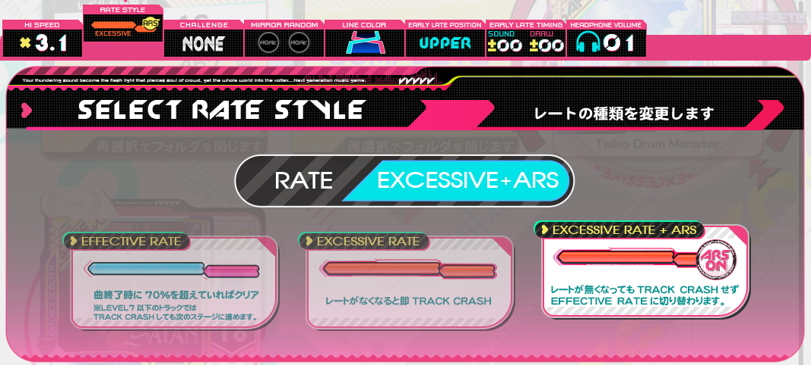
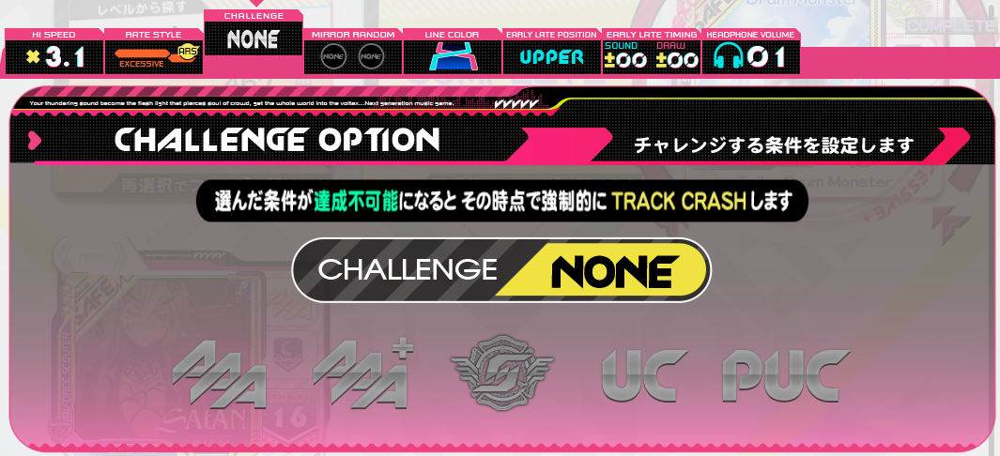
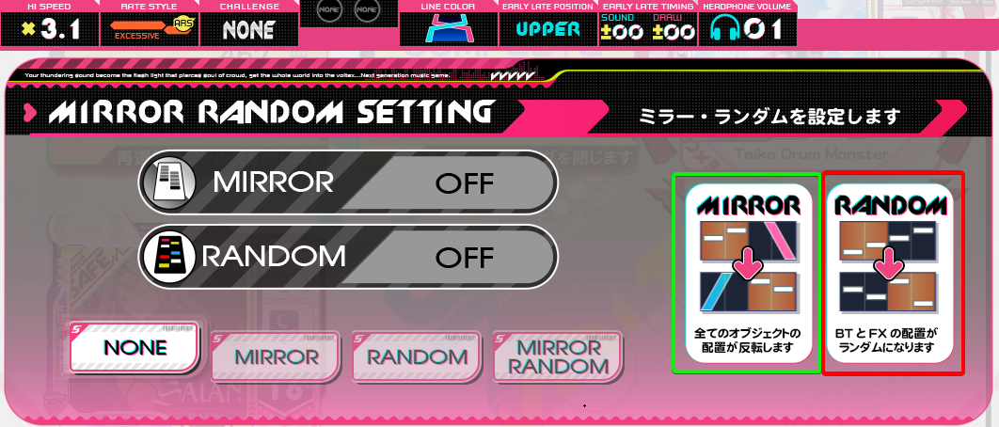
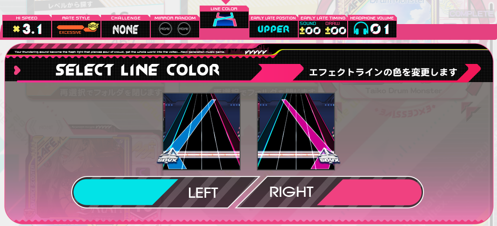
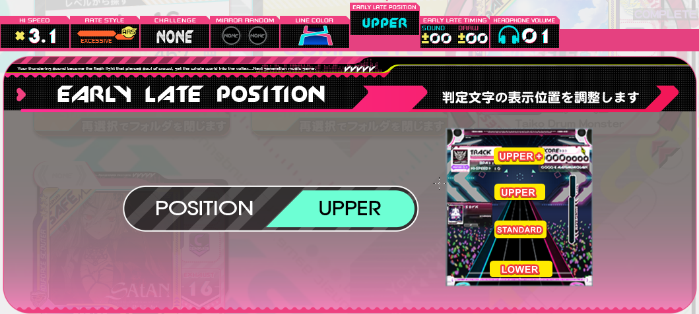
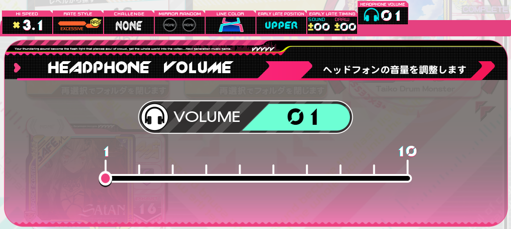

Ce menu vous permet de choisir votre Barre de vie entre EFFECTIVE RATE, EXCESSIVE RATE, et EFFECTIVE RATE + ARS
L'EFFECTIVE RATE ou l'EXCESSIVE RATE en LIGHT START met fin a votre crédit si vous CRASHEZ votre track, tandis que le STANDARD START vous permet de CRASH et de ne pas provoquer un arrêt de jeu.
L'EXCESSIVE RATE + ARS est disponible en STANDARD START, en PREMIUM TIME, et en BLASTER, et permet de basculer sur l'EFFECTIVE RATE si jamais vous tombez a 0% de l'EXCESSIVE RATE.
Uniquement pendant un PREMIUM TIME, vous avez la possibilité de vous mettre un "challenge". Il se choisit entre : AAA, AAA+, S, UC et PUC. Le challenge à pour rôle de de vous faire automatiquement recomencer votre track si votre challenge est raté. Exemple, si votre challenge est mis sur UC et que vous faites une erreur, vous recommencerez automatiquement au début de la track.
/!\ Si vous n'appuyez pas sur 00, rater votre challenge vous fera seulement crash et non restart automatiquement
Le mode Mirror permet au joueur d'inverser la disposition des notes sur de la ligne de jeu, le BT-A devenant BT-D, BT-B devenant BT-C, FX-L devenant FX-R et VOL-L devenant VOL-R (encadré vert). Le mode Random permet au joueur qu'une note soit aléatoirement échangée avec une autre, Exemple une note qui devrait tomber sur BT-A se retrouve aléatoirement mise sur BT-B, BT-C ou BT-D (encadré rouge). Ces deux modes peuvent aussi être combinés.
Le mode Mirrior peut s'avérer utile sur des tracks qui mobilisent une main en particulier et que le joueur est plus à l'aise avec son autre main. Le mode Random n'est jamais un avantage comme chaque try est différent, il est difficile de construire une mémoire musculaire et visuelle de la chart. Ce mode est principalement utilisé pour le fun.
Vous pouvez changer la couleur des lazers gauche et droit, si vous n'êtes pas à l'aise avec les couleurs par défault vous pourrez changer parmi Bleu, Rouge, Jaune et Vert. ( Oui il est possible d'avoir la même couleur pour les deux lazers...)
Vous avez la possibilité de régler l'emplacement des EARLY / LATE où vous voulez sur l'écran. Si vous voulez les avoir en plein millieu pour pouvoir ajuster votre précision en temps réel, je conseille de choisir UPPER, si vous ne voulez pas les voir pendant que vous jouez, il y a une 5ème option NONE qui les désactive complètement.
Bon celui la me parait assez clair visuellement, pas besoin de l'expliquer, n'oubliez pas que le volume peut aussi se régler avec numpad 7 et numpad 1
